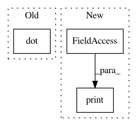

3cc9e1cfd039c5986c9ab4e1dfe3fa2d627a7d0a,geomstats/invariant_metric.py,InvariantMetric,left_exp_from_identity,#InvariantMetric#Any#,60
Before Change
metric, it used the left-invariant metric associated to the same
inner-product at the identity.
exp = np.dot(self.inner_product_mat_at_identity, tangent_vec)
exp = self.lie_group.regularize(exp)
return exp
After Change
mat = self.inner_product_mat_at_identity.transpose()
exp = np.dot(tangent_vec, mat)
print("exp in left exp before ref")
print(exp.shape)
exp = self.lie_group.regularize(exp)
return exp
def exp_from_identity(self, tangent_vec):
In pattern: SUPERPATTERN
Frequency: 3
Non-data size: 3
Instances
Project Name: geomstats/geomstats
Commit Name: 3cc9e1cfd039c5986c9ab4e1dfe3fa2d627a7d0a
Time: 2018-02-02
Author: ninamio78@gmail.com
File Name: geomstats/invariant_metric.py
Class Name: InvariantMetric
Method Name: left_exp_from_identity
Project Name: stellargraph/stellargraph
Commit Name: bcf6d0a188ee9ba868c1de01c347f813e3aaa35c
Time: 2020-01-22
Author: andrew.docherty@data61.csiro.au
File Name: tests/layer/test_link_inference.py
Class Name: Test_Link_Inference
Method Name: test_mul_l1_l2_avg
Project Name: geomstats/geomstats
Commit Name: fb9275731bbc0bea7beb59e0d83c662537c27b8c
Time: 2018-01-31
Author: ninamio78@gmail.com
File Name: geomstats/invariant_metric.py
Class Name: InvariantMetric
Method Name: left_exp_from_identity